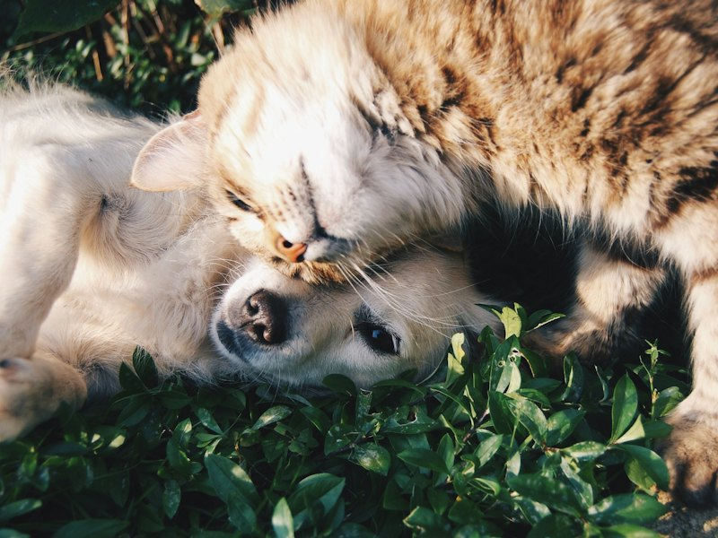
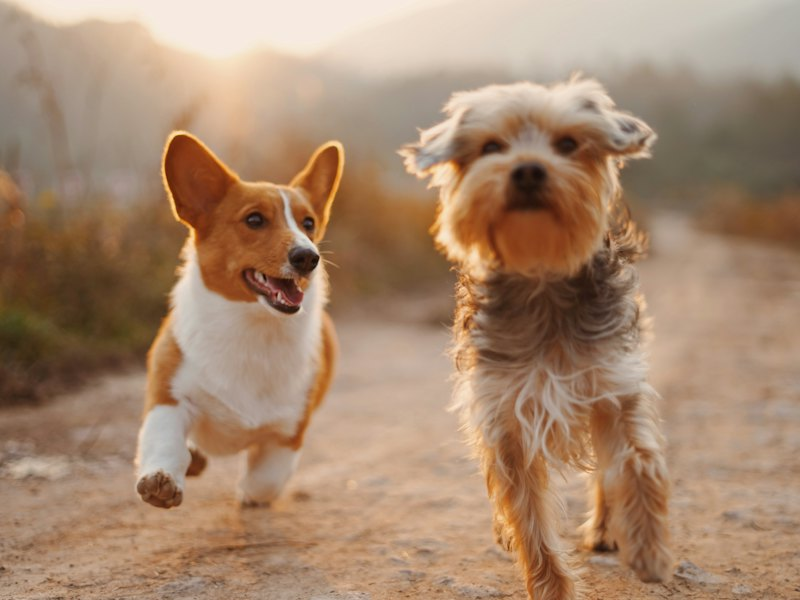
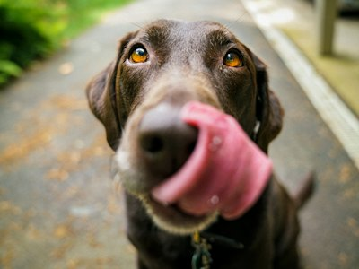
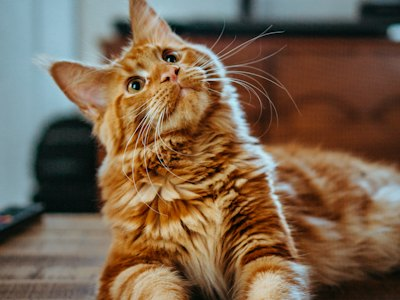
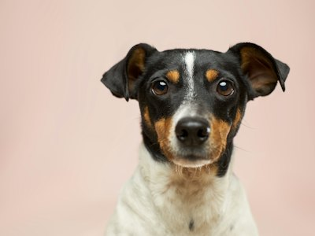
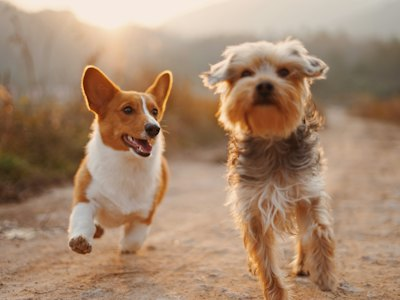
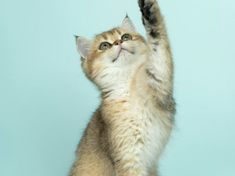
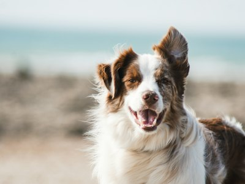
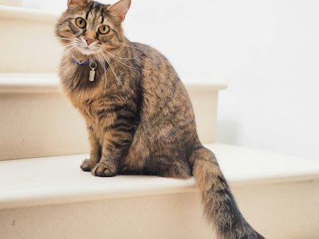

Our Mission
To rescue and care for abandoned, abused and neglected animals, providing them with food, shelter, medical care and love while helping them find safe and caring homes.

Tiny Paws Animal Rescue was started by a group of people who love animals and wanted to help animals in need. They noticed that many dogs and cats in the community were being abandoned or not properly cared for.
At first, they helped a few animals by providing food, shelter and medical care. As more people heard about their work, volunteers and donations started coming in.
Today, Tiny Paws continues to rescue animals and help them find safe and loving homes.
To rescue and care for abandoned, abused and neglected animals, providing them with food, shelter, medical care and love while helping them find safe and caring homes.
A community where all animals are treated with kindness and care, and where every rescued animal has the opportunity to find a safe and loving forever home.

A look at some of the animals we have cared for and the families they have found.






